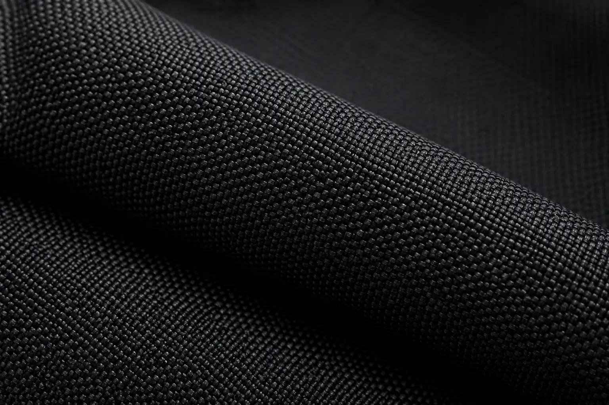

Fabric Sourcing
Carefully selected fabrics based on your product requirements.
From sourcing premium fabrics to final packaging, every stage of production is managed with precision, consistency, and attention to detail to ensure reliable garment manufacturing for your brand.
We manage each step of the manufacturing process carefully to maintain quality, consistency, and smooth production from start to finish.
Carefully selected fabrics based on your product requirements.
Prototype garments created for approval before production.
Fabric panels cut with consistency and production accuracy.
Garments assembled with clean construction and durable stitching.
Every garment inspected and packed before shipment.
Every garment passes through multiple inspection phases. We test for durability, fit, and finish before anything leaves our facility.
Seam strength, fabric weight, and color consistency verified
Finished garments are reviewed before packaging and dispatch.
